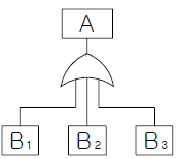
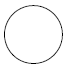
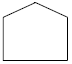
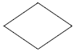
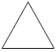
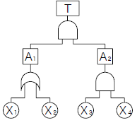
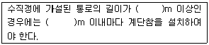
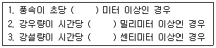

산업안전산업기사 (2015-08-16 기출문제)
1과목: 산업안전관리론
1. 스트레스의 요인 중 직무특성에 대한 설명으로 가장 옳은 것은?
- 과업의 과소는 스트레스를 경감시킨다.
- 과업의 과중은 스트레스를 경감시킨다.
- 시간의 압박은 스트레스와 관계없다.
- 직무로 인한 스트레스는 동기부여의 저하, 정신적 긴장 그리고 자신감 상실과 같은 부정적 반응을 초래한다.
(정답률: 89%)

2. 국제노동통계회의에서 결의된 재해통계의 국제적 통일안을 설명한 것으로 틀린 것은
- 국제적 통일안의 결의로서 모든 국가가 이 방법을 적용하고 있다.
- 강도율은 근로손실일수(1000배)를 총인원의 연근로시간수로 나누어 산정한다.
- 도수율은 재해의 발생건수(100만 배)를 총인원의 연근로 시간수로 나누어 산정한다.
- 국가별, 시기별, 산업별 비교를 위해 산업 재해통계를 도수율이나 강도율의 비율로 나타낸다.
(정답률: 81%)
3. 적응기제(Adjustment Mechanism) 중 방어적 기제(Defence Mechanism)에 해당하는 것은?
- 고립(Isolation)
- 퇴행(Regression)
- 억압(Suppression)
- 보상(Compensation)
(정답률: 80%)
4. 보호구 관련 규정에 따른 안전모의 착장체 구성요소에 해당되지 않는 것은?
- 머리턱끈
- 머리받침끈
- 머리고정대
- 머리받침고리
(정답률: 66%)
5. 산업안전보건법령에 따른 산업안전보건 위원회의 회의결과를 주지시키는 방법으로 가장 적절하지 않은 것은?
- 사보에 게재한다.
- 회의에 참석하여 파악토록 한다.
- 사업장 내의 게시판에 부착한다.
- 정례 조회시 집합교육을 통하여 전달한다.
(정답률: 80%)
6. 기억과정에 있어 “파지(retention)”에 대한 설명으로 가장 적절한 것은?
- 사물의 인상을 마음속에 간직하는 것
- 사물의 보존된 인상을 다시 의식으로 떠오르는 것
- 과거의 경험이 어떤 형태로 미래의 행동에 영향을 주는 작용
- 과거의 학습 경험을 통하여 학습된 행동이나 지속되는 것
(정답률: 60%)
7. 위험예지훈련 중 TBM(Tool Box Meeting)에 관한 설명으로 옳지 않은 것은?
- 작업 장소에서 원형의 형태를 만들어 실시한다.
- 통상 작업시작 전, 후 10분 정도 시간으로 미팅한다.
- 토의는 10인 이상에서 20인 단위의 중규모가 모여서 한다.
- 근로자 모두가 말하고 스스로 생각하고 “이렇게 하자” 라고 합의한 내용이 되어야 한다.
(정답률: 86%)
8. 관료주의에 대한 설명으로 틀린 것은?
- 의사결정에는 작업자의 참여가 필수적이다.
- 인간을 조직 내의 한 구성원으로만 취급한다.
- 개인의 성장이나 자아실현의 기회가 주어지기 어렵다.
- 사회적 여건이나 기술의 변화에 신속하게 대응하기 어렵다.
(정답률: 76%)
9. 누전차단장치 등과 같은 안전장치를 정해진 순서에 따라 동작시키고 동작상황의 양부를 확인하는 점검을 무슨 점검이라고 하는가?
- 외관점검
- 작동점검
- 기술점검
- 종합점검
(정답률: 90%)
10. 산업안전보건법령상 안전ㆍ보건표지 중 ‘산화성 물질 경고’의 색채에 관한 설명으로 옳은 것은?
- 바탕은 파란색, 관련 그림은 흰색
- 바탕은 무색, 기본모형은 빨간색
- 바탕은 흰색, 기본모형 및 관련 부호는 녹색
- 바탕은 노란색, 기본모형, 관련 부호 및 그림은 검은색
(정답률: 71%)
11. Fail-safe의 정의를 가장 올바르게 나타낸 것은?
- 인적 불안전 행위의 통제방법을 말한다.
- 인력으로 예방할 수 없는 불가항력의 사고이다.
- 인간-기계 시스템의 최적정 설계방안이다.
- 인간의 실수 또는 기계ㆍ설비의 결함으로 인하여 사고가 발생치 않도록 설계시부터 안전하게 하는 것이다.
(정답률: 86%)
12. 산업안전보건법령상 사업내 안전ㆍ보건교육에 있어 채용시의 교육내용에 해당하는 것은? (단, 산업안전보건법 및 일반관리에 관한 사항은 제외한다.)
- 유해ㆍ위험 작업환경 관리에 관한 사항
- 표준안전작업방법 및 지도요령에 관한 사항
- 작업공정의 유해ㆍ위험과 재해 예방대책에 관한 사항
- 기계ㆍ기구의 위험성과 작업의 순서 및 동선에 관한 사항
(정답률: 53%)
13. 주의(Attention)의 특징 중 여러 종류의 자극을 자각할때, 소수의 특정한 것에 한하여 주의가 집중되는 것을 무엇이라 하는가?
- 선택성
- 방향성
- 변동성
- 검출성
(정답률: 84%)
14. 다음 중 창조성ㆍ문제해결능력의 개발을 위한 교육기법으로 가장 적절하지 않은 것은?
- 역할연기법
- In-Basket법
- 사례연구법
- 브레인스토밍법
(정답률: 51%)
15. 허츠버그(Herzberg)의 2요인 이론에 있어서 다음 중 동기요인에 해당하는 것은?
- 임금
- 지위
- 도전
- 작업조건
(정답률: 65%)
16. 안전ㆍ보건교육 강사로서 교육진행의 자세로 가장 적절하지 않은 것은?
- 중요한 것은 반복해서 교육할 것
- 상대방의 입장이 되어서 교육할 것
- 쉬운 것에서 어려운 것으로 교육할 것
- 가능한 한 전문용어를 사용하여 교육할 것
(정답률: 92%)
17. 다음 중 아담스(Edward Adams)의 관리구조 이론에 대한 사고발생 메커니즘(mechanism)을 가장 올바르게 설명한 것은?
- 사람의 불안전한 행동에서만 발생한다.
- 불안전한 상태에 의해서만 발생한다.
- 불안전한 행동과 불안전한 상태가 복합되어 발생한다.
- 불안전한 상태와 불안전한 행동은 상호 독립적으로 작용한다.
(정답률: 84%)
18. 무재해운동 이념의 3원칙에 해당되는 것은?
- 포상의 원칙
- 참가의 원칙
- 예방의 원칙
- 팀 활동의 원칙
(정답률: 77%)
19. 의식의 상태에서 작업 중 걱정, 고민, 욕구불만 등에 의하여 정신을 빼앗기는 것을 무엇이라 하는가?
- 의식의 과잉
- 의식의 파동
- 의식의 우회
- 의식수준의 저하
(정답률: 80%)
20. 하인리히의 재해구성비율에 따라 경상사고가 87건 발생 하였다면 무상해사고는 몇 건이 발생하였겠는가?
- 300건
- 600건
- 900건
- 1200건
(정답률: 82%)
2과목: 인간공학 및 시스템안전공학
21. 다음 FT도에서 각 사상이 발생할 확률이 B1은 0.1, B2는 0.2, B3는 0.3일 때 사상 A가 발생할 확률은 약 얼마인가?

- 0.006
- 0.496
- 0.604
- 0.804
(정답률: 68%)
22. 화학설비에 대한 안전성 평가시 “정량적 평가”의 5가지 항목에 해당하지 않는 것은?
- 전원
- 취급물질
- 온도
- 화학설비용량
(정답률: 69%)
23. 위험조정을 위한 필요한 기술은 조직형태에 따라 다양하며 4가지로 분류하였을 때 이에 속하지 않는 것은?
- 보류(retention)
- 계속(continuation)
- 전가(transfer)
- 감축(reduction)
(정답률: 65%)
24. 휴먼에러에 있어 작업자가 수행해야 할 작업을 잘못 수행하였을 경우 오류를 무엇이라 하는가?
- omission error
- sequence error
- timing error
- commission error
(정답률: 67%)
25. 5000개 베어링을 품질 검사하여 400개의 불량품을 처리하였으나 실제로는 1000개의 불량 베어링이 있었다면 이러한 상황의 HEP(Human Error Probability)는 얼마인가?
- 0.04
- 0.08
- 0.12
- 0.16
(정답률: 68%)
26. 다음 중 청각적 표시에 대한 설명으로 틀린 것은?
- JND(Just Noticeable Difference)는 인간이 신호의 50%를 검출할 수 있는 자극차원(강도 또는 진동수)의 최소 차이이다.
- 장애물이나 칸막이를 넘어가야 하는 신호는 1000Hz 이상의 진동수를 갖는 신호를 사용한다.
- 다차원 코드 시스템을 사용할 경우, 일반적으로 차원의 수가 많고 수준의 수가 적은 것이 차원의 수가 적고 수준의 수가 많은 것보다 좋다.
- 배경 소음과 다른 진동수를 갖는 신호를 사용하는 것이 바람직하다.
(정답률: 63%)
27. 결함수분석(FTA)에서 지면부족 등으로 인하여 다른 페이지 또는 부분에 연결시키기 위해 사용되는 기호는?




(정답률: 63%)
28. 다음 중 부품배치의 원칙에 해당되지 않는 것은?
- 중요성의 원칙
- 사용빈도의 원칙
- 다각능률의 원칙
- 기능별 배치원칙
(정답률: 84%)
29. S 에어컨 제조회사는 올해 경영슬로건으로 “소비자가 가장 선호하는 바람을 제공할 때까지”를 선정하였다. 목표 달성을 위하여 에어컨 가동 상태를 테스트하는 실험실을 설계하고자 한다. 다음 중 실험실의 실효온도에 영향을 주는 인자와 가장 관계가 먼 것은?
- 온도
- 습도
- 체온
- 공기유동
(정답률: 80%)
30. 다음 중 교체 주기와 가장 밀접한 관련성이 있는 보전 방식은?
- 보전예방
- 생산보전
- 품질보전
- 예방보전
(정답률: 63%)
31. 자동생산라인의 오류 경보음을 3단계로 설계하였다. 1단계 경보음이 1000Hz, 60dB라 할 때 3단계 오류 경보음이 1단계 경보음보다 4배 더 크게 들리도록 하려면, 다음 중 경보음의 주파수와 음압수준으로 가장 적절한 것은?
- 1000Hz, 80dB
- 1000Hz, 120dB
- 2000Hz, 60dB
- 2000Hz, 80dB
(정답률: 53%)
32. 다음 중 양립성(compatibility)의 종류가 아닌 것은?
- 개념양립성
- 감성양립성
- 운동양립성
- 공간양립성
(정답률: 77%)
33. 다음 중 시스템에 영향을 미칠 우려가 있는 모든 요소의 고장을 형태별로 해석하여 그 영향을 검토하는 분석방법은?
- FTA
- ETA
- MORT
- FMEA
(정답률: 75%)
34. 조도가 250럭스인 책상 위에 짙은색 종이 A와 B가 있다. 종이 A의 반사율은 20%이고, 종이 B의 반사율은 15% 이다. 종이 A에는 반사율 80%의 색으로, 종이 B에는 반사율 60%의 색으로 같은 글자를 각각 썼을 때 다음 설명 중 옳은 것은? (단, 두 글자의 크기, 색, 재질 등은 동일하다.)
- A 종이에 쓰인 글자가 B 종이에 쓰인 글자보다 눈에 더 잘 보인다.
- B 종이에 쓰인 글자가 A 종이에 쓰인 글자보다 눈에 더 잘 보인다.
- 두 종이에 쓴 글자는 동일한 수준으로 보인다.
- 어느 종이에 쓰인 글자가 더 잘 보이는지 알 수 없다.
(정답률: 78%)
35. [그림]과 같은 FT도의 컷셋(cut sets)에 속하는 것은?

- {X1, X2, X3}
- {X1, X2, X4}
- {X1, X3, X4}
- {X1, X2}, {X3, X4}
(정답률: 68%)
36. 다음 중 인체에서 뼈의 기능에 해당하지 않는 것은?
- 대사 기능
- 장기 보호
- 조혈 기능
- 인체의 지주
(정답률: 81%)
37. 다음 중 시스템의 정의와 관련한 설명으로 틀린 것은?
- 구성요소들이 모인 집합체다.
- 구성요소들이 정보를 주고받는다.
- 구성요소들은 공통의 목적을 갖고 있다.
- 개회로(open loop)시스템은 피드백(feedback) 정보를 필요로 한다.
(정답률: 73%)
38. 다음 중 눈이 식별할 수 있는 과녁(target)의 최소 특징이나 과녁 부분들 간의 최소공간을 의미하는 것은?
- 최소분간시력(minimum separable acuity)
- 최소지각시력(minimum perceptible acuity)
- 입체시력(stereoscopic acuity)
- 동시력(dynamic visual acuity)
(정답률: 69%)
39. 인간-기계시스템에 대한 평가에서 평가 척도나 기준(criteria) 으로서 관심의 대상이 변수를 무엇이라 하는가?
- 독립변수
- 확률변수
- 통제변수
- 종속변수
(정답률: 71%)
40. 다음 중 조정표시비(C/D비, Control-Display ratio)를 설계할 때의 고려할 사항과 가장 거리가 먼 것은?
- 공차
- 계기의 크기
- 운동성
- 조작시간
(정답률: 59%)
3과목: 기계위험방지기술
41. 산업안전보건기준에 관한 규칙에 따라 회전축, 기어, 풀리, 풀라이휠 등에 사용되는 기계요소인 키, 핀 등의 형태로 적합한 것은?
- 돌출형
- 개방형
- 폐쇄형
- 묻힘형
(정답률: 69%)
42. 프레스에 사용하는 양수조작식 방호장치의 누름버튼 상호간 최소 내측 거리는 얼마인가?
- 300mm 이상
- 350mm 이상
- 400mm 이상
- 500mm 이상
(정답률: 84%)
43. 선반작업 시 사용되는 방호장치는?
- 풀아웃(full out)
- 게이트 가드(gate guard)
- 스위프 가드(sweep guard)
- 쉴드(shield)
(정답률: 68%)
44. 다음 중 외형의 안전화를 위한 대상기계ㆍ기구ㆍ장치별 색채의 연결이 잘못된 것은?(오류 신고가 접수된 문제입니다. 반드시 정답과 해설을 확인하시기 바랍니다.)
- 시동용 단추스위치 - 녹색
- 고열을 내는 기계 - 노란색
- 대형기계 - 밝은 연녹색
- 급정지용 단추스위치 - 빨간색
(정답률: 66%)
45. 산업안전보건법령상 프레스를 사용하여 작업할 때 작업 시작 전 점검항목에 해당하지 않는 것은?
- 전선 및 접속부 상태
- 클러치 및 브레이크의 기능
- 프레스의 금형 및 고정볼트 상태
- 1행정 1정지기구ㆍ급정지장치 및 비상정지장치의 기능
(정답률: 68%)
46. 가스용접용 산소 용기에 각인된 “TP50”에서 “TP”의 의미로 옳은 것은?
- 내압시험압력
- 인장응력
- 최고 충전압력
- 검사용적
(정답률: 71%)
47. 산업용 로봇의 동작 형태별 분류에 속하지 않는 것은?
- 원통좌표 로봇
- 수평좌표 로봇
- 극좌표 로봇
- 관절 로봇
(정답률: 58%)
48. 다음 중 곤돌라의 방호장치에 관한 설명으로 틀린 것은?
- 비상정지장치 작동 시 동력은 차단되고, 누름버튼의 복귀를 통해 비상정지 조작 직전의 작동이 자동으로 복귀될 것
- 권과방지장치는 권과를 방지하기 위하여 자동적으로 동력을 차단하고 작동을 제동하는 기능을 가질 것
- 기어ㆍ축ㆍ커플링 등의 회전부분에는 덮개나 울이 설치되어 있을 것
- 과부하 방지장치는 적재하중을 초과하여 적재시 주 와이어로프에 걸리는 과부하를 감지하여 경보와 함께 승강되지 않는 구조일 것
(정답률: 61%)
49. 일반적인 연삭기로 작업 중 발생할 수 있는 재해가 아닌 것은?
- 연삭 분진이 눈에 튀어 들어가는 것
- 숫돌 파괴로 인한 파편의 비래
- 가공 중 공작물의 반발
- 글레이징(glazing) 현상에 의한 입자의 탈락
(정답률: 81%)
50. 다음 중 보일러의 증기관 내에서 수격작용(water hammering) 현상이 발생하는 가장 큰 원인은?
- 프라이밍(priming)
- 워터링(watering)
- 캐리오버(carry over)
- 서어징(surging)
(정답률: 60%)
51. 산업안전보건법령에 따라 양중기에서 절단하중이 100톤인 와이어로프를 사용하여 근로자가 탑승하는 운반구를 지지하는 경우, 달기와이어로프에 걸 수 있는 최대 사용하중은 얼마인가?
- 10톤
- 20톤
- 25톤
- 50톤
(정답률: 68%)
52. 다음 중 기계운동 형태에 따른 위험점의 분류에 해당되지 않는 것은?
- 끼임점
- 회전물림점
- 협착점
- 절단점
(정답률: 74%)
53. 산업안전보건법령상 프레스기의 방호장치에 표시해야 될 사항이 아닌 것은?
- 제조자명
- 규격 또는 등급
- 프레스기의 사용 범위
- 제조번호 및 제조연월
(정답률: 63%)
54. 산업안전보건법령상 양중기의 달기체인에 대한 사용금지 사항으로 틀린 것은?
- 달기체인의 한 꼬임에서 끊어진 소선의 수가 10% 이상인 것
- 링의 단면지름이 달기 체인이 제조된 때의 해당 링의 지름의 10%를 초과하여 감소한 것
- 달기 체인의 길이가 달기 체인이 제조된 때의 길이의 5%를 초과한 것
- 균열이 있거나 심하게 변형된 것
(정답률: 54%)
55. 프레스기에 설치하는 방호장치의 특징에 관한 설명으로 틀린 것은?
- 양수조작식의 경우 기계적 고장에 의한 2차 낙하에는 효과가 없다.
- 광전자식의 경우 핀클러치방식에는 사용할 수 없다.
- 손쳐내기식은 측면방호가 불가능하다.
- 가드식은 금형교환 빈도수가 많을 때 사용하기에 적합하다.
(정답률: 51%)
56. 다음 중 연삭기 덮개에 관한 설명으로 틀린 것은?
- “탁상용 연삭기”란 일가공물을 손에 들고 연삭숫돌에 접촉시켜 가공하는 연삭기를 말한다.
- “워크레스트(workrest)”란 탁상용 연삭기에 사용하는 것으로서 공작물을 연삭할 때 가공물의 지지점이 되도록 받쳐주는 것을 말한다.
- 워크레스트는 연삭숫돌과의 간격을 5mm 이상 조정할 수 있는 구조이어야 한다.
- 자율안전확인 연삭기 덮개에는 자율안전확인의 표시외에 숫돌사용 주속도와 숫돌회전방향을 추가로 표시 하여야 한다.
(정답률: 67%)
57. 동력전달부분의 전방 50cm 위치에 설치한 일방 평행 보호망에서 가드용 재료의 최대 구멍크기는 얼마인가?
- 45mm
- 56mm
- 68mm
- 81mm
(정답률: 54%)
58. 컨베이어(conveyor)의 방호장치로 가장 적절하지 않은 것은?
- 비상정지장치
- 덮개 또는 울
- 권과방지장치
- 역주행방지장치
(정답률: 69%)
59. 다음 중 연삭숫돌의 지름이 100mm이고, 회전수가 1000rpm이면 숫돌의 원주속도(mm/min)는 약 얼마인가?
- 314
- 628
- 314000
- 628000
(정답률: 51%)
60. 다음 중 산업용 로봇에 사용되는 안전매트에 관한 설명으로 틀린 것은?
- 일반적으로 단선경보장치가 부착되어 있어야 한다.
- 일반적으로 감응시간을 조절하는 장치는 부착되어 있지 않아야 한다.
- 자율안전확인의 표시 외에 작동하중, 감응시간 등을 추가로 표시하여야 한다.
- 안전매트의 종류는 연결사용 가능여부에 따라 1선 감지기와 복선감지기로 구분할 수 있다.
(정답률: 45%)
4과목: 전기 및 화학설비위험방지기술
61. 콘덴서 및 전력 케이블 등을 고압 또는 특별고압 전기 회로에 접촉하여 사용할 때 전원을 끊은 뒤에도 감전될 위험성이 있는 주된 이유로 볼 수 있는 것은?
- 잔류전하
- 접지선 불량
- 접속기구 손상
- 절연 보호구 미사용
(정답률: 81%)
62. 산업안전보건법령상 방폭전기설비의 위험장소분류에 있어 보통 상태에서 위험 분위기를 발생할 염려가 있는 장소로서 폭발성 가스가 보통상태에서 집적되어 위험농도로 될 염려가 있는 장소를 몇 종 장소라 하는가?
- 0종 장소
- 1종 장소
- 2종 장소
- 3종 장소
(정답률: 69%)
63. 건물의 전기설비로부터 누설전류를 탐지하여 경보를 발하는 누전경보기의 구성으로 옳은 것은?
- 축전기, 변류기, 경보장치
- 변류기, 수신기, 경보장치
- 수신기, 발신기, 경보장치
- 비상전원, 수신기, 경보장치
(정답률: 61%)
64. 전기화재의 발생원인이 아닌 것은?
- 합선
- 절연저항
- 과전류
- 누전 또는 지락
(정답률: 81%)
65. 금속도체 상호간 혹은 대지에 대하여 전기적으로 절연되어 있는 2개 이상의 금속도체를 전기적으로 접속하여 서로 같은 전위를 형성하여 정전기 사고를 예방하는 기법을 무엇이라 하는가?
- 본딩
- 1종 접지
- 대전 분리
- 특별 접지
(정답률: 71%)
66. 다음 중 방폭전기설비가 설치되는 표준환경조건에 해당 되지 않는 것은?
- 표고는 1000m 이하
- 상대습도는 30 ~ 95% 범위
- 주변온도는 –20℃ ~ +40℃ 범위
- 전기설비에 특별한 고려를 필요로 하는 정도의 공해, 부식성가스, 진동 등이 존재하지 않는 장소
(정답률: 64%)
67. 이동전선에 접속하여 임시로 사용하는 전등이나 가설의 배선 또는 이동전선에 접속하는 가공매달기식 전등 등을 접촉함으로 인한 감전 및 전구의 파손에 의한 위험을 방지하기 위하여 보호망을 부착하도록 하고 있다. 이들을 설치시 준수하여야 할 사항이 아닌 것은?
- 보호망은 쉽게 파손되지 않을 것
- 재료는 용이하게 변형되지 아니하는 것으로 할 것
- 전구의 밝기를 고려하여 유리로 된 것을 사용할 것
- 전구의 노출된 금속부분에 쉽게 접촉되지 아니하는 구조로 할 것
(정답률: 83%)
68. 착화에너지가 0.1mJ이고 가스를 사용하는 사업장 전기설비의 정전용량이 0.6nF일 때 방전시 착화 가능한 최소 대전 전위는 약 얼마인가?
- 289V
- 385V
- 577V
- 1154V
(정답률: 50%)
69. 감전 사고의 요인과 관계가 없는 것은?
- 전기기기의 절연파괴
- 콘덴서의 방전 미실시
- 전기기기의 24시간 계속 운전
- 정전 작업시 단락접지를 하지 않아 유도전압 발생
(정답률: 76%)
70. 산업안전보건법에 따라 누전에 의한 감전위험을 방지하기 위하여 대지전압이 몇 V를 초과하는 이동형 또는 휴대형 전기기계ㆍ기구에는 감전 방지용 누전차단기를 설치하여야 하는가?
- 50V
- 75V
- 110V
- 150V
(정답률: 53%)
71. 산업안전보건법령상 공정안전보고서에 포함되어야 하는 사항 중 공정안전자료의 세부내용에 해당하는 것은?(오류 신고가 접수된 문제입니다. 반드시 정답과 해설을 확인하시기 바랍니다.)
- 주민홍보계획
- 안전운전지침서
- 각종 건물ㆍ설비의 배치도
- 위험과 운전 분석(HAZOP)
(정답률: 56%)
72. 다음 중 분진폭발의 가능성이 가장 낮은 물질은?
- 소맥분
- 마그네슘
- 질석가루
- 스텔라이트
(정답률: 76%)
73. 다음 중 폭발의 위험성이 가장 높은 것은?
- 폭발 상한농도
- 완전연소 조성농도
- 폭발 상한선과 하한선의 중간점 농도
- 폭굉 상한선과 하한선의 중간점 농도
(정답률: 55%)
74. 건조설비의 사용에 있어 500~800℃ 범위의 온도에 가열된 스테인리스강에서 주로 일어나며, 탄화크롬이 형성되어 결정 경계면의 크롬함유량이 감소하여 발생되는 부식형태는?
- 전면부식
- 층상부식
- 입계부식
- 격간부식
(정답률: 70%)
75. 공기 중에 3ppm의 디메틸아민(demethylamine, TLV-TWA : 10ppm)과 20ppm의 시클로헥산올(cyclo hexanol, TLV-TWA : 50ppm)이 있고, 10ppm의 산화프로필렌(propyleneoxide. TLV-TWA : 20ppm)이 존재한다면 혼합 TLV-TWA는 몇 ppm인가?
- 12.5
- 22.5
- 27.5
- 32.5
(정답률: 52%)
76. 최대운전압력이 게이지압력으로 200kgf/cm2인 열교환기의 안전밸브 작동압력(kgf/cm2 )으로 가장 적절한 것은?
- 210
- 220
- 230
- 240
(정답률: 46%)
77. 다음 중 산업안전보건법상 화학설비 또는 그 배관의 덮개ㆍ플랜지ㆍ밸브 및 콕의 접합부에 대하여 당해 접합부에서의 위험물질 등의 누출로 인한 폭발ㆍ화재 또는 위험물의 누출을 방지하기 위한 가장 적절한 조치는?
- 개스킷의 사용
- 코르크의 사용
- 호스 밴드의 사용
- 호스 스크립의 사용
(정답률: 67%)
78. 아세톤에 관한 설명으로 옳은 것은?
- 인화점은 557.8℃이다.
- 무색의 휘발성 액체이며 유독하지 않다.
- 20% 이하의 수용액에서는 인화 위험이 없다.
- 일광이나 공기에 노출되면 과산화물을 생성하여 폭발성으로 된다.
(정답률: 53%)
79. 다음 중 액체의 증발잠열을 이용하여 소화시키는 것으로 물을 이용하는 방법은 주로 어떤 소화방법에 해당되는가?
- 냉각소화법
- 연소억제법
- 제거소화법
- 질식소화법
(정답률: 79%)
80. 유해ㆍ위험물질 취급에 대한 작업별 안전한 작업이 아닌 것은?
- 자연발화의 방지 조치
- 인화성 물질의 주입시 호스를 사용
- 가솔린이 남아 있는 설비에 중유의 주입
- 서로 다른 물질의 접촉에 의한 발화의 방지
(정답률: 80%)
5과목: 건설안전기술
81. 토사붕괴시의 조치사항으로 거리가 먼 것은?
- 대피통로 및 공간의 확보
- 동시작업의 금지
- 2차 재해의 방지
- 굴착공법의 선정
(정답률: 76%)
82. 콘크리트 거푸집을 설계할 때 고려해야 하는 연직하중으로 거리가 먼 것은?
- 작업하중
- 콘크리트 하중
- 충격하중
- 풍하중
(정답률: 69%)
83. 작업발판 및 통로의 끝이나 개구부로서 근로자가 추락 할 위험이 있는 장소에 대한 방호조치와 거리가 먼 것은?
- 안전난간 설치
- 울타리 설치
- 투하설비 설치
- 수직형 추락방망 설치
(정답률: 78%)
84. 다음은 가설통로를 설치하는 경우의 준수사항이다. 빈칸에 들어갈 수치를 순서대로 옳게 나타낸 것은?

- 8, 7
- 7, 8
- 10, 15
- 15, 10
(정답률: 59%)
85. 보통 흙의 굴착공사에서 굴착깊이가 5m, 굴착기초면의 폭이 5m인 경우 양단면 굴착을 할 때 상부 단면의 폭은? (단, 굴착구배는 1:1로 한다.)
- 10m
- 15m
- 20m
- 25m
(정답률: 61%)
86. 흙을 크게 분류하면 사질토와 점성토로 나눌 수 있는데 그 차이점으로 옳지 않은 것은?
- 흙의 내부 마찰각은 사질토가 점성토보다 크다.
- 지지력은 사질토가 점성토보다 크다.
- 점착력은 사질토가 점성토보다 작다.
- 장기침하량은 사질토가 점성토보다 크다.
(정답률: 54%)
87. 산업안전보건기준에 관한 규칙에 따라 중량물을 취급하는 작업을 하는 경우에 작업계획서 내용에 포함되는 사항은?
- 해체의 방법 및 해체 순서도면
- 낙하위험을 예방할 수 있는 안전대책
- 사용하는 차량계 건설기계의 종류 및 성능
- 작업지휘자 배치계획
(정답률: 48%)
88. 터널 건설작업시 터널 내부에서 화기나 아크를 사용하는 장소에 필히 설치하도록 법으로 규정하고 있는 설비는?
- 소화설비
- 대피설비
- 충전설비
- 차단설비
(정답률: 82%)
89. 산업안전보건기준에 관한 규칙에 따라 계단 및 계단참을 설치하는 경우 매 m2 당 최소 얼마 이상의 하중에 견딜 수 있는 강도를 가진 구조로 설치하여야 하는가?
- 500kg
- 600kg
- 700kg
- 800kg
(정답률: 64%)
90. 콘크리트를 타설할 때 안전상 유의하여야 할 사항으로 옳지 않은 것은?
- 콘크리트를 치는 도중에는 거푸집, 지보공 등의 이상 유무를 확인한다.
- 진동기 사용시 지나친 진동은 거푸집 도괴의 원인이 될 수 있으므로 적절히 사용해야 한다.
- 최상부의 슬래브는 되도록 이어붓기를 하고 여러 번에 나누어 콘크리트를 타설한다.
- 타워에 연결되어 있는 슈트의 접속은 확실한지 확인한다.
(정답률: 80%)
91. 고소작업대 구조에서 작업대를 상승 또는 하강시킬 때 사용하는 체인의 안전율은 최소 얼마 이상인가?
- 2
- 5
- 10
- 12
(정답률: 59%)
92. 건설공사 중 작업으로 인하여 물체가 떨어지거나 날아올 위험이 있을 때 조치할 사항으로 옳지 않은 것은?
- 안전난간 설치
- 보호구의 착용
- 출입금지구역의 설정
- 낙하물방지망의 설치
(정답률: 74%)
93. 건설용 양중기에 대한 설명으로 옳은 것은?
- 삼각데릭은 인접시설에 장해가 없는 상태에서 360° 회전이 가능하다.
- 이동식크레인(crane)에는 트럭 크레인, 크롤러 크레인 등이 있다.
- 휠 크레인에는 무한궤도식과 타이어식이 있으며 장거리 이동에 적당하다.
- 크롤러 크레인은 휠 크레인보다 기동성이 뛰어나다.
(정답률: 69%)
94. 유해ㆍ위험방지계획서 제출대상 공사의 규모 기준으로 옳지 않은 것은?
- 최대지간길이가 50m 이상인 교량건설등 공사
- 다목적댐, 발전용댐 및 저수용량 2천만톤 이상의 용수 전용 댐, 지방상수도 전용 댐 건설 등의 공사
- 깊이 12m 이상인 굴착공사
- 터널건설 등의 공사
(정답률: 60%)
95. 수중굴착 공사에 가장 적합한 건설장비는?(오류 신고가 접수된 문제입니다. 반드시 정답과 해설을 확인하시기 바랍니다.)
- 백호
- 어스드릴
- 항타기
- 클램쉘
(정답률: 67%)
96. 조강포틀랜드 시멘트를 사용한 콘크리트의 압축강도를 시험하지 않을 경우 거푸집널의 해체 시기로 옳은 것은? (단, 평균기온이 20℃ 이상이면서 기둥의 경우)
- 1일
- 2일
- 3일
- 4일
(정답률: 46%)
97. 철골작업을 중지하여야 하는 악천후의 조건이다. 순서대로 ( )안에 알맞은 숫자를 순서대로 옳게 나열한 것은?

- 10, 10, 10
- 1, 1, 10
- 1, 10, 1
- 10, 1, 1
(정답률: 82%)
98. 낙하추나 화약의 폭방 등으로 인공진동을 일으켜 지반의 종류, 지층 및 강성도 등을 알아내는데 활용되는 지반조사 방법은?
- 탄성파탐사
- 전기저항탐사
- 방사능탐사
- 유량검층탐사
(정답률: 80%)
99. 사다리식 통로 등을 설치하는 경우 준수해야할 기준으로 옳지 않은 것은?
- 견고한 구조로 할 것
- 폭은 20cm 이상의 간격을 유지할 것
- 심한 손상ㆍ부식 등이 없는 재료를 사용할 것
- 발판과 벽과의 사이는 15cm 이상을 유지할 것
(정답률: 68%)
100. 잠함, 우물통, 수직갱, 그 밖에 이와 유사한 건설물 또는 설비의 내부에서 굴착작업을 하는 경우에 준수해야할 기준으로 옳지 않은 것은?
- 산소 결핍 우려가 있는 경우에는 산소농도를 측정하는 사람을 지명하여 측정하도록 할 것
- 근로자가 안전하게 오르내리기 위한 설비를 설치할 것
- 굴착 깊이가 10m를 초과하는 경우에는 해당 작업장소와 외부와의 연락을 위한 통신설비 등을 설치할 것
- 굴착 깊이가 20m를 초과하는 경우에는 송기를 위한 설비를 설치하여 필요한 양의 공기를 공급할 것
(정답률: 55%)